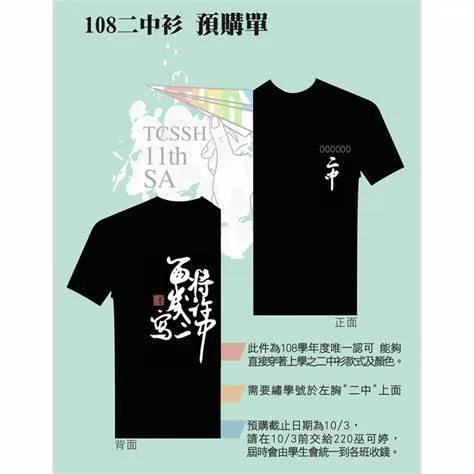
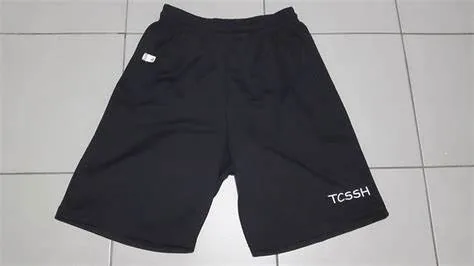
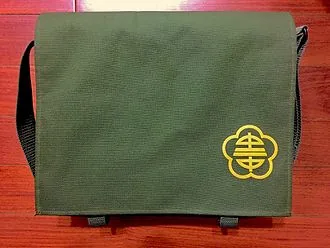
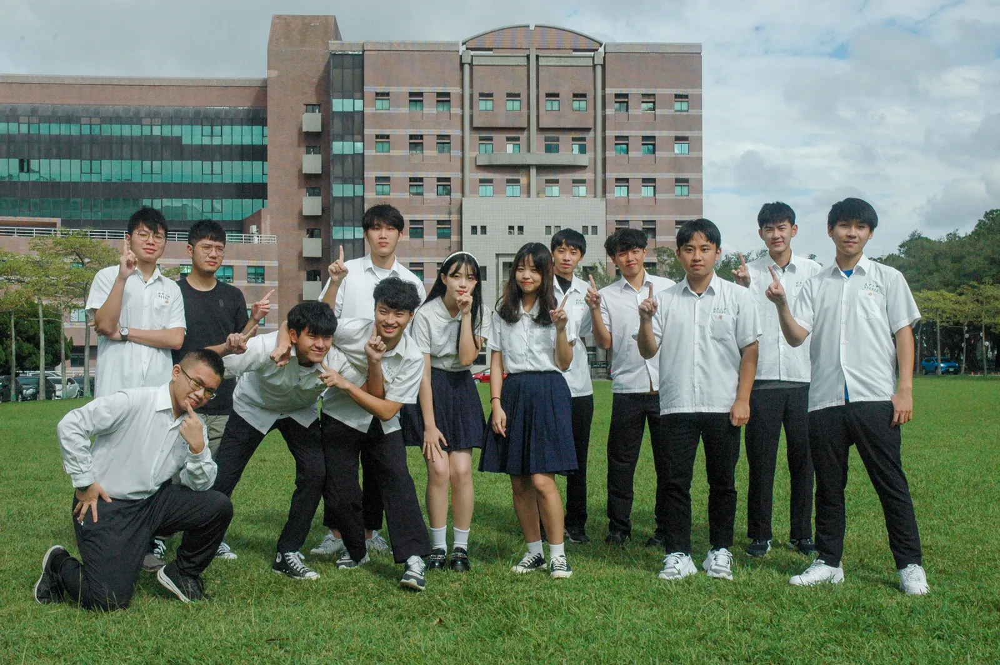

Introduction to Taichung Municipal Second Senior High School
A campus founded in 1922.
Taichung Municipal Second Senior High School
Founded in 1922, TCSSH originated from the Taichung Middle School during the Japanese colonial period. TCSSH is one of the "Four Great Provincial Schools" and is now part of the Central Taiwan Five Schools Alliance.
The Accessories of a TCSSH Student



TCSSH Shirt, TCSSH Pants, School Bag
A Wise TCSSH Teacher Once Said: "The only time you should wear a uniform is during university uniform day."

However, I noticed that seniors at NYCU were quite lazy, so I organized the first joint TCSSH uniform day with my friend at NTHU.
TCSSH is Now 100 Years Old
It was just a year after I graduated from high school, and I was able to visit my teachers while still managing my university work.
Use the dots below or the left/right arrow keys to switch slides